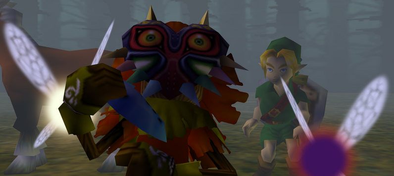
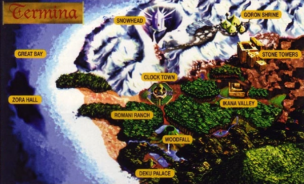

Story
 The Legend of Zelda: Majora's Mask takes place several months after the events of the previous game, Ocarina of Time. Link, now the Hero of Time, searches for his fairy companion, Navi, who left Hyrule after peace was restored to the land. While searching the Lost Woods on his horse, Epona, Link is ambushed by a Skull Kid wearing a sinister looking mask and two fairies, Tatl and Tael. Skull Kid steals the Ocarina of Time from Link and takes off on Epona. Link chases after Skull Kid on foot but falls into a trap. After coming to, Link is met by Skull Kid who curses him, turning him into a Deku Scrub. Skull Kid then flees but accidently leaves Tatl behind. Tatl reluctantly reveals to Link that she and Tael are brother and sister and that Tael will be lost without his sister by his side. They put their differences aside and together they follow Skull Kid to Clock Town, a village in the center of an alternate land to Hyrule known as Termina.
They meet the Happy Mask Salesman who asks Link to retrieve the mask that was stolen from him by Skull Kid. In exchange, the Happy Mask Salesman promises to turn Link back into a Hylian. He also states that he must leave Clock Town in three days so Link must retrieve the mask before then. Link agrees and he and Tatl go off to search for Skull Kid. During their search they discover that Skull Kid has caused a lot of mischief in Clock Town and has even put a curse on the moon, causing it to slowly be pulled on a collision course with Termina. They finally track down Skull Kid on the night of the third day and confront him on top of the Clock Town tower. Tael tells Link and Tatl that they must awaken the Four Giants, Termina's guardians, so that they can stop the moon from destroying Termina. After recovering his stolen Ocarina, Link plays the Song of Time which transports him a Tatl back three days, back to when they first arrived in Termina.
Link speaks again with the Happy Mask Salesman who turns Link back into a Hylian using the recovered Ocarina of Time. Once the curse is lifted, the Happy Mask Salesman asks Link to give him the stolen mask he was supposed to recover from Skull Kid. However, Link never recovered the mask and upon realizing this, the Happy Mask Salesman becomes furious. He tells Link that the mask Skull Kid stole is known as Majora's Mask and that it contains a terrible evil that could be devasting if it fell into the wrong hands. Once the Happy Mask Salesman regains his composure, he sends Link and Tatl off to properly recover Majora's Mask.
Link and Tatl journey to the four regions of Termina to awaken the Four Giants: Woodfall, Snowhead, Great Bay, and Ikana Canyon. During their travels they learn that Majora's Mask has been wreaking havoc across all four regions of Termina. The waters of Woodfall have been poisoned and the Deku princess of the Deku Palace has been kidnapped. Snowhead has been afflicted by an endless winter which is causing the Goron race to starve. The water in Great Bay has been contaminated causing the sea creatures to turn into monsters and in Ikana Canyon, the people living in the region have been plagued by a curse that brings the dead back to life. Link also learns that Skull Kid and the Four Giants were at one time close friends but when the giants became the guardians of Termina, they had to leave Skull Kid. Tatl and Tael then befriended the lonely Skull Kid and accompanied him in his mischief making which ultimately led to him stealing Majora's Mask from the Happy Mask Salesman. Feeling abandoned by the Four Giants, Skull Kid then put a curse on Termina using the evil powers of the mask.
Once Link and Tatl restore peace to all four regions and awaken the Four Giants, they confront Skull Kid on top of the Clock Town tower. After summoning the Four Giants to keep the moon from destroying Termina, Majora's Mask comes to life and takes control of the moon, leaving Skull Kid behind. Link has a final battle with Majora's Mask inside the moon and defeats the evil mask. Having finally retrieved his stolen mask, the Happy Mask Salesman states that all the evil has left Majora's Mask and departs from Termina with the mask in hand. The Four Giants and Tatl and Tael forgive Skull Kid as it was clear that he was being possessed by Majora's Mask. Skull Kid then befriends Link and in the final scene of the game we are shown a tree stump in the lost woods where Skull Kid has drawn a picture of himself, his new friend Link, Tatl and Tael, and the Four Giants.